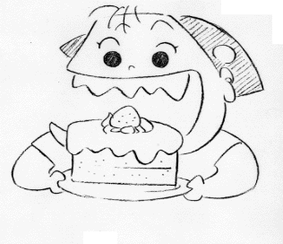

左から五十畑迅人君、高畑監督、宇野なおみちゃん、荒木雅子さん、益岡徹さん

制作日誌 1999年4月
99.4.2（金）
・引き続き音楽表を作る作業の続き。
・六時よりバーにて、明日行われる予定のジブリ合唱団収録に向けての簡単なリハーサルが行われる。まるで学校の放課後のようだ、と不評。
・朝から、宣伝のメイジャーさんに今まで出来ている山田くんを通して見てもらう。
99.4.3（土）
・プロジェクターによるラッシュチェックが行われる。
・六時より二馬力の大広間（？）において、ジブリ合唱団の収録が行われる。これは本編内で使われる、素人っぽい合唱の一部を、若林さん、井上さん等が二馬力に録音機材を持ち込み、ジブリのスタッフで録音してしまおうという趣向。この呼びかけに賛同した、声自慢のジブリスタッフは男女合わせて約30名。それに飛び入りで参加した日本テレビ奥田さんや、博報堂の藤巻さんらも加え、堂々たるメンバー（？）にて収録が始まる。最初にボイストレーナーの方から声の出し方等の指導を受けた後、いよいよ録音がスタート。曲は混声合唱、女性合唱、男声合唱の三曲。歌っている間はそれなりにいい感じに聞こえていたが、いざプレイバックしてみると、まさに素人。一同愕然とするも、高畑監督は演出意図にはぴたりとはまったのか、それぞれ15分くらいの録音でOKが出る。しかし、たまにはみんなで大声を出すってのも気持ちが良いもの。
99.4.5（月）
・プロジェクターによるラッシュチェックが行われる。
・朝11時半より、今年度新入社員の入社式が行われる。今年は、作画6人、仕上げ2人、美術1人、演出（東小金井村塾の卒業生）3人の計12人という大量採用となる。仕上げ、美術は既にジブリ社内で研修、および作業を行っているが、「となりの山田くん」の作業で机がすべて埋まっている作画部門は、研修開始が15日からとなっている。
99.4.6（火）
・今日は日帰りで、郡山、福島、仙台の劇場回り。
・今日から東小金井村塾2の卒業生3人が、望月、居村、神村の各氏について研修開始。
・近藤勝也氏が今日からスタジオIN。早速ボブスレー編作打ち。
・ボブ編のラッシュチェックが行われる。内2カットフィルムレコーディングに出す予定。
・所長が来社（？）、 スケジュールの遅れを指摘し、金魚鉢でスケジュール表を持ち込んで緊急トップ会議。
99.4.7（水）
・プロジェクター及び、35mmによるラッシュチェックが行われる。ものすごい勢いで物が流れているので、必然的にラッシュチェックの回数も増えている。
・昨日の所長の指摘を受け、各部署の代表者が集まり、CUTの流れがスムースにいくように話し合いが行われる。
・14-5の色打ち合わせが行われる。
99.4.8（木）
・朝11時より、東京ホテルオークラにて「ホーホケキョ となりの山田くん」制作発表記者会見が行われる。会見の出席者は徳間書店 代表取締役社長 徳間康快氏、日本テレビ放送網 代表取締役社長 氏家齊一郎氏、博報堂 代表取締役社長 東海林隆氏、ブエナ ビスタ ホーム エンターテインメント 副社長（アジア・パシフィック担当） ティム・サリバン氏、松竹 代表取締役社長 大谷信義氏、たかし役の益岡徹氏、しげ役の荒木雅子氏、そして監督、脚本の高畑監督。まつ子役の朝丘雪路氏は、舞台スケジュ－ルの都合でビデオ出演となる。会場には新聞、テレビの取材陣が約千人も集まり、異様な熱気に包まれる。記者会見後のパ-ティには小渕首相も顔を出し、「私の顔はのぼるに似ている」と即席ギャグで会場を沸かせていた。
・夕方リテーク分のラッシュチェックが行われる。
・7-09・14-07色打ち合わせ。
・午後からジブリにて、熊本県民テレビ、福岡放送、札幌テレビの取材が行われる。
99.4.9（金）
・朝の新幹線で名古屋へ。松竹中部営業所にに立ち寄り、松竹中部営業所宣伝の山田さんと車で、小牧市の小牧コロナシネマワ－ルド、春日井市の春日井コロナシネマワ－ルド、江南市の江南コロナシネマワ－ルドの各映画館へ。名古屋市泊まり。
・朝からジブリにて、中京テレビ、読売テレビ、日本海テレビの取材が行われる。
99.4.10（土）
・今日も山田氏と劇場訪問。半田市の半田コロナシネマワ－ルド、豊田市の豊田ジャスコシアタ－、豊川市のワ－ナ－・マイカル・シネマズ豊川、豊川コロナシネマワ－ルドへ。豊橋から新幹線で帰京。
・15時よりラッシュチェック。
・17時より14-04色打ち合わせ。
・17時半より13-07・08着彩ボードチェック。
・アビッド用に、まだ声を録っていない13-7の兄ちゃん役の声を、居村氏があてる。監督曰く「声が軽くて駄目ですね」と一言。
99.4.12（月）
・朝の飛行機で佐賀空港へ。毎度の事ながら朝の都内のラッシュは半端じゃない。ジブリは東小金井で良かったと痛感。松竹九州営業所の中原さんと、佐賀市の佐賀セントラル、上峰町のWMC上峰、日田市の日田シネマテ－クリベルテへ。久留米市泊まり。
・13時半に高畑監督がニューヨークいる矢野顕子さんと国際電話で音楽打ち合わせ。因みに時差は13時間。
99.4.13（火）
・今日も中原さんの車で、久留米市の松竹セントラル、大野城市のWMC大野城、筑紫野市の筑紫野とうきゅうシネマへ。博多泊まり。
・ボブスレ－編のラッシュチェックが行われる。色等で少し問題有り。
99.4.14（水）
・今日も車で中間市のAMC中間16、北九州市八幡西区黒崎の黒崎文化劇場へ。夜の飛行機で福岡から帰京。
・ようやく13-7の色打ち合わせが行われる。
99.4.15（木）
・今日から作画の新入社員が出社。本来入る予定だった二スタがまだ工事中のため、今日はまず、宮崎監督の発案で、ジブリ最寄りの駅である東小金井からジブリまでの道を、竹箒とゴミ袋を持って徹底清掃を行う。たばこの吸い殻、空き缶等、10袋分のごみが回収される。
・午後からは、研修に使う動画机を新人みんなで倉庫から運搬、ほこりだらけの机をぞうきんで磨き上げ、工事中の二スタ二階に運びあげる。
・14-4-12、7-10色打ち
・17時よりリテークラッシュチェック。
99.4.16（金）
・昨日運びあげた机だが、電気配線がオシャカなっていたり、ガラスが割れていたりと、使い物にならないものも多かったため、スタジオの備品を含め、近所のディスカウントショップに買い物に行く。結局、新人みんなで清掃修理等で一日中作業。
・14時から部次長会議が行われる。
・15時より14-6・7-8色打ち。
・連日色打ちを行ってるため、それに合わせて背景が驚く程早いスピードで上がっている。
99.4.17（土）
・今日からいよいよ先生となる松瀬氏のもと、研修開始、と意気込んでスタートしたものの、作業が遅れている１階部分の工事音のため、松瀬氏の声が全く聞こえず、研修がたびたび中断。過酷な条件下での研修となる。
・工事中にも関わらず、１階の一部に商品部が引っ越し。夕方ようやく引っ越しが終了し、新人を含め、引っ越し記念ピザパーティが行われる。
・5時より、プロジェクター及びフィルムによる、ラッシュチェックが行われる。
・NYにいる矢野顕子さんから、事務所にISDN回線で送られてきた音楽を稲城さんがDATでコピーしジブリへ。早速高畑さんが試聴。
99.4.19（月）
・11時より音楽打ち合わせ。土曜日に聴いた音楽も含め検討。
・「となりの山田くん」は一寸小さめな動画用紙で書いているため、研修に使っている150フレ－ムの動画用紙、レイアウト用紙がほとんどないことが今になって発覚。慌てて注文を出す。
・シーン7-1の色打ち合わせが行われる。
・夜の11時ころ、突然外で夜鳴そばの音が。早速ジブリに出社していた日テレの奥田さん、神村氏、美術部の二人がラーメンを食べに呼び止める。なんでもみんなが食べ終わった後、近所に店屋が無いため夜食が食べられないジブリスタッフのために、鈴木プロデューサーが「毎日来て」とお願いしたとか。
99.4.20（火）
・シーン9-12、7-7の色打ち合わせ。
・三時よりボブスレー編とシーン3-2のラッシュチェックが行われる。
・本日夜鳴きそばが現れず。前日鈴木プロデューサーが模造刀をもってお願いしたため、変な事務所と間違えられたという噂が。
・訪問した劇場を全てインターネット上で紹介しようという企画を進めているが、演助の新人高橋氏がもとホームページに関わる仕事場にいたため、作業がとてもスムースに進んでいる。
99.4.21（水）
・二時より、若林さん、井上さん、伊藤さん等が来社し、音響の最終チェックが行われる。編集の瀬山さんから提案されたカッティングを早めるスケジュールを元に話し合いが持たれたため、前回の破滅的気分より、何とかなるぞ、という感じのスケジュールが組める。
99.4.22（木）
・シーン4-4、4-14の色打ち合わせが行われる。
・フィルムによるラッシュチェックとイマジカのスタッフが来社しての色チェックが行われる。その後メインスタッフと打ち合わせ。
・現在、エプソンさんの協力で、山田くん上映館に配付するポスターを制作しているが、その最終チェックが行われる。いくつか修正を加え、来週早々にもプリント開始。
・夜11時過ぎに、一同待ち望んでいた夜鳴きそばがついに出現、チャルメラの音が聞こえて来た途端、制作部を中心に「ウォー」といううなり声が会社中に響き渡る。ジブリファンという店主さんのご好意で、今日はオール100円引き＆卵サービスということもあり、約10人程が車の回りを取り囲む。
・神村氏がクラッシュさせたシビックにかわり、スパシオが納車される。前の車が走行距離10万キロ以上という年季の入っていた車のため、全てが良く見えてしまう。
99.4.23（金）
・夕方二馬力にて、先日行われたジブリ合唱団の再録音が行われる。今回は前回のメンバーに、作画の新人六人、見学に来ていた日本テレビの新入社員を加えて大増強。より厚みのある合唱となる。本来映画用の音楽やセリフは、外部の音が全く入らないスタジオやホールで録音されるが、今回も、ジブリに近くて天井が高いので録音に適している、という理由で二馬力が使われた。しかし、いくら立派な二馬力の建物とは言え、所詮は家、外の物音が結構聞こえてしまう。今回の収録でネックになったのが、雨と、日曜日に迫った統一地方選挙の選挙カー。そこでいろいろ考えたあげく実行したのが、まず雨の音をシャットアウトするため、窓やドアを完全密閉、また選挙カー対策としては、外に人を待機させ、選挙カーの声が聞こえてきたら走って静かにしてもらう、という実にアナログ的もの。結果は選挙カー対策はうまくいったものの、雨の音を消そうと建物を完全密閉したため、内部が酸欠状態になり、途中で休憩を入れ、換気をしないといけない結果に。それでもみんな酸欠のため必死になって歌ったのが良かったのか、前回よりも良いものが録音できる。
・講談社「少年マガジン」の取材陣が来社。さまざまな人にインタビューをしていた。

99.4.24（土）
・稲城、石井両氏が昨日の合唱録音のために借りた機材を返しに久石譲氏のスタジオ「ワンダーステーション」へ。ちょうど久石氏が居合わせ、音楽を録音し直した米版「天空の城ラピュタ」の話で盛り上がる。
・今日も講談社「少年マガジン」の取材が入る。
99.4.25（日）
・演助の奥村くんが、アフレコ用台本を明日までに完成させるため出社。疲れているが、充実した表情である。
・夜の11時にニューヨークの矢野さんから映画用に録音された音楽がISDN送信される。渋谷のスタジオで受信したため門屋、稲城両氏が待機し、着信と同時にジブリへ。高畑監督らもジブリに待機し、12時頃から持ってきたDATを試聴後、アビッドに取り込みチェック。監督が家に帰ったのは午前四時。
99.4.26（月）
・演助新人の宮地、奥村両氏の電話応対があまりにあまりなので、神村氏が急遽「徹夜明けになんでこんなものをつくってやらにゃいかんのだ」とぶつぶつ言いながら電話応対マニュアルを作成。と、横で古城氏のとてもここには書けない毒舌が炸裂する。
・今日から、制作陣の人手不足を補うため、ＱＡＲ斎藤氏が制作に復帰。早速石井氏と共に外注回りに出る。
99.4.27（火）
・完成した劇場配布用のポスター先行60部がジブリに送られてくる。新人演助を中心に早速発送にとりかかる。
・午後よりシーン13-7の色打ち合わせが行われる。月光仮面の夕景の背動について、仕上げ処理にするより背景を貼りあわせた方が良いのではないか、との意見が出たための話し合い。
99.4.28（水）
・午後一時より田町のMITスタジオにおいて、益岡さん、朝岡さん、荒木さん、五十畑君、宇野なおみちゃんが一堂に会し、修正及び追加分のアフレコが行われる。全員それぞれのキャラクターに慣れてきたのか、実に上手く演じている。順調に作業が進み9時頃に終了する。

99.4.29（木）
・安藤氏が取り組んでいた本編ラストカットの原画がアップ（原画が全部終わった訳ではなく、ストーリーの最後が上がったという意味）。実線動画だけで1064枚の労作。
・ラッシュチェックが行われる。
・夜11時から渋谷のスタジオで、再びニューヨークから矢野さんの演奏した音楽をISDNで電送。1時頃からジブリで高畑監督等がチェック。作業は朝まで続く。
99.4.30（金）
・午後4時よりテレセンで古田新太、富田靖子、斉藤暁氏のアフレコが行われる。ほとんど徹夜状態の高畑監督を車に乗せテレセンに向かうも、都内は大渋滞＆急いでアクセルをちょっと踏んだらネズミ取りに捕まってしまうの踏んだり蹴ったり状態。間に合いそうもないので、途中で高畑監督を降ろし、電車でテレセンに向かってもらう。結局約40分程遅刻させてしまい関係者から大ヒンシュクをくらう（引き続き車で向かった私がテレセンに到着したのが、三時間半たった午後六時前…）。ちなみに帰りは鈴木プロデューサーの助言に従って高速で帰ったら約一時間でジブリに到着。トホホ…。

| 次のページへ |
| 日誌索引へ戻る |